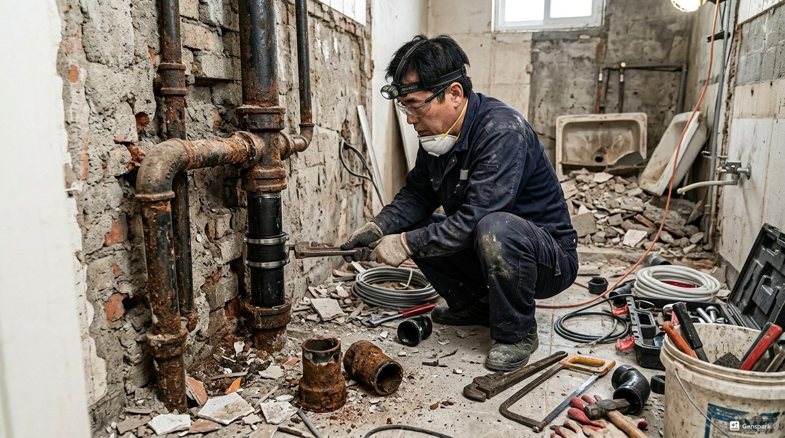
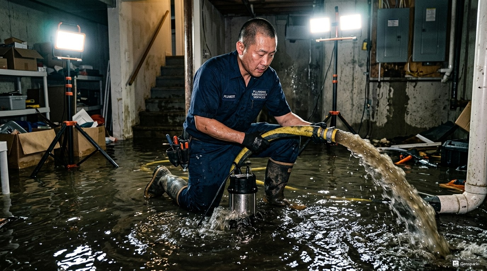

인천연수구 하수구막힘 원인과 해결
인천연수구 지역의 하수구막힘은 주로 기름때, 음식물 찌꺼기, 머리카락, 이물질 등이 배관 내부에 축적되어 발생합니다. 특히 오래된 건물이 많은 송도, 연수동, 청학동 일대에서는 배관 노후화로 인한 막힘이 빈번합니다.
제우스시설관리는 관로 내시경 카메라로 막힘의 정확한 원인과 위치를 파악한 후, 드레인 기계와 고압세척기를 투입하여 완벽하게 해결합니다. 단순히 뚫는 것이 아니라 배관 내벽까지 깨끗하게 세척하여 재발을 방지합니다.

▲ 인천연수구 현장에서 전문 장비로 하수구막힘 해결 작업 중
제우스시설관리 전문 장비
✅ 드레인 기계 - 스프링 와이어로 배관 내 이물질을 물리적으로 파쇄·제거
✅ 관로 내시경 카메라 - 배관 내부를 실시간 영상으로 확인하여 정확한 진단
✅ 고압세척기 - 최대 200bar 고압수로 배관 내벽 오염물 완벽 세척
✅ 관로탐지기 - 매설 배관의 위치와 깊이를 정확히 탐지

▲ 고압세척기를 이용한 배관 내부 청소 작업
인천연수구 서비스 지역
인천연수구 전 지역에 28분 내 출동합니다. 야간·주말·공휴일 추가 요금 없이 동일한 서비스를 제공합니다.
비용 안내
📞 전화 한 통이면 정확한 견적을 바로 안내해드립니다
현장 상황에 따라 비용이 달라지기 때문에,
전화 상담 시 증상만 말씀해주시면 예상 비용을 바로 안내드립니다.
✅ 출장비 무료 | ✅ 미해결시 비용 0원 | ✅ 추가 요금 없음

▲ 인천연수구 배관작업 전문 장비 투입 작업 현장
왜 제우스시설관리인가?
20년 이상 현장 경험으로 어떤 복잡한 상황에서도 해결합니다. 인천연수구 지역에서 하수구막힘 문제가 발생하면 전화 한 통으로 전문가가 출동합니다.
- 24시간 365일 긴급출동 가능
- 최첨단 전문 장비 완비 (드레인 기계, 내시경, 고압세척기, 관로탐지기)
- 투명한 견적 - 작업 전 정확한 비용 안내
- A/S 보장 - 동일 증상 재발시 무상 재시공
- 출장비 무료, 미해결시 비용 0원
인천연수구 하수구막힘 전문가 조언
하수구막힘은 가장 흔한 배관 문제 중 하나로, 음식물 찌꺼기, 기름때, 머리카락, 이물질 등이 복합적으로 작용하여 발생합니다. 특히 오래된 건물에서는 배관 내부의 스케일(석회 침전물)이 관 지름을 좁혀 막힘이 더 자주 발생합니다.
제우스시설관리의 하수구막힘 해결 프로세스는 ①내시경 진단→②원인 파악→③드레인 기계 투입→④고압세척→⑤최종 점검의 5단계로 진행됩니다. 이 체계적인 접근 방식으로 재발률을 최소화합니다.
인천연수구 하수구막힘 작업 프로세스
Step 1. 전화 접수 및 상담
증상을 상세히 청취하고, 예상 원인과 준비 장비를 사전에 결정합니다.
Step 2. 28분 내 현장 도착
가장 가까운 전문 기술자가 필요 장비를 모두 갖추고 출동합니다.
Step 3. 내시경 카메라 진단
관로 내시경으로 배관 내부를 실시간 영상으로 확인하여 정확한 막힘 위치와 원인을 파악합니다.
Step 4. 드레인 기계 투입
스프링 와이어를 배관에 투입하여 막힌 이물질을 물리적으로 파쇄하고 관통합니다.
Step 5. 고압세척
최대 200bar의 고압수로 배관 내벽에 남은 오염물을 완벽하게 제거합니다.
Step 6. 최종 점검 및 확인
내시경으로 배관 상태를 재확인하고, 고객에게 작업 결과를 영상으로 보여드립니다.
인천연수구 하수구막힘 실제 현장 사례
📋 음식점 하수구 기름 막힘
건물 유형: 중식당 | 지역: 인천연수구
영업 중 주방 하수구 완전 막힘으로 영업 중단 위기. 그리스트랩 및 하수관 전체에 동물성 기름이 응고되어 있었음. 고온 고압세척으로 기름 용해 제거, 그리스트랩 청소 병행. 작업 시간 1시간, 영업 재개.
📋 주방 하수구 완전 막힘
건물 유형: 30년 된 다세대 주택 | 지역: 인천연수구
주방 하수구에서 물이 전혀 빠지지 않는 상태. 내시경 확인 결과, 배관 내부에 기름때와 음식물 찌꺼기가 15cm 이상 두껍게 축적. 드레인 기계로 1차 관통 후, 고압세척기(150bar)로 배관 전체 세척. 작업 시간 45분, 배수 정상 회복.
인천연수구 하수구막힘 자주 묻는 질문
Q. 인천연수구 하수구가 막히면 직접 뚫어도 되나요?
A. 가정용 도구로 일시적 해소는 가능하지만, 근본 원인(배관 내 이물질 축적, 관 파손 등)을 해결하지 못하면 반복됩니다. 전문 장비(드레인 기계, 내시경 카메라)를 사용해야 정확한 진단과 완전한 해결이 가능합니다.
Q. 인천연수구 하수구막힘 비용은 얼마인가요?
A. 막힘 정도와 위치에 따라 다르지만, 기본 출장비 무료이며 작업 전 현장 견적을 정확히 안내합니다. 미해결 시 비용 0원 정책을 운영하고 있어 안심하실 수 있습니다.
Q. 인천연수구 하수구막힘을 예방하는 방법이 있나요?
A. 음식물 찌꺼기 거름망 사용, 기름류 직접 배수 금지, 머리카락 트랩 설치, 정기적인 배관 세척(6개월~1년 주기)이 효과적입니다. 특히 오래된 건물은 연 1회 전문 점검을 권장합니다.